Issue #1111: hand an item to Hypo, its thread, and Send on a draft
Taken by the Playwright spec web/tests/inbox.spec.ts against its fake client API, desktop and phone (Pixel 7), light and dark.
Hand to Hypo: the dialog (dark)
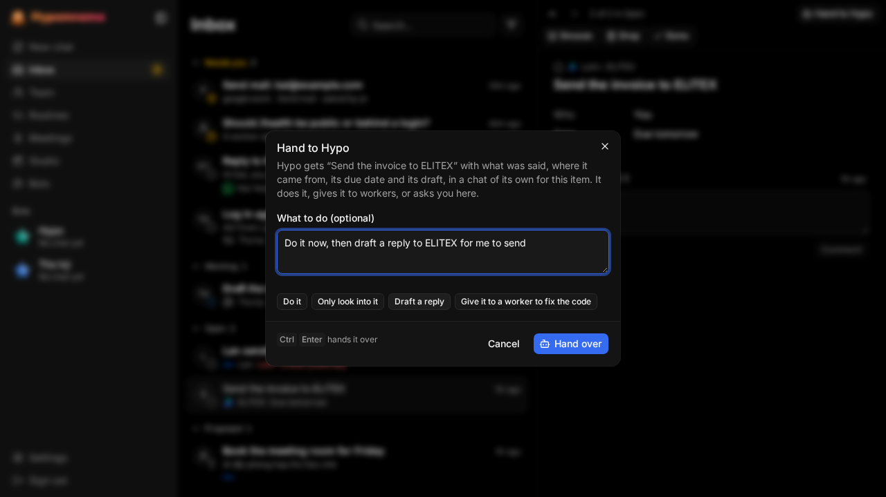
desktop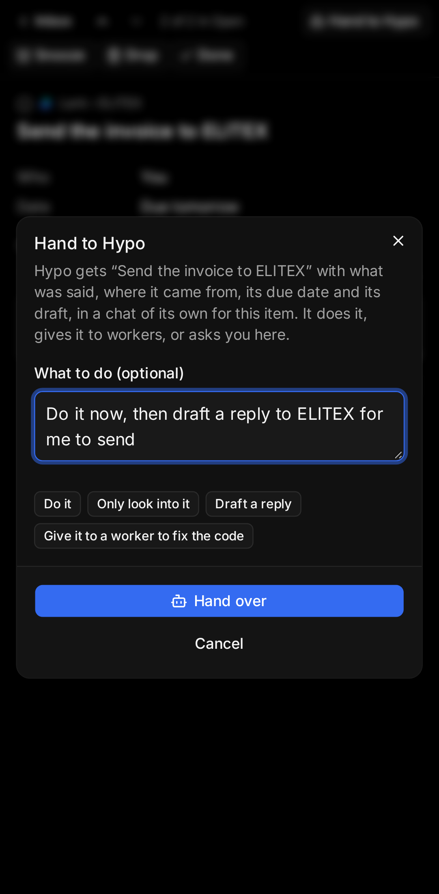
phoneHand to Hypo (light)
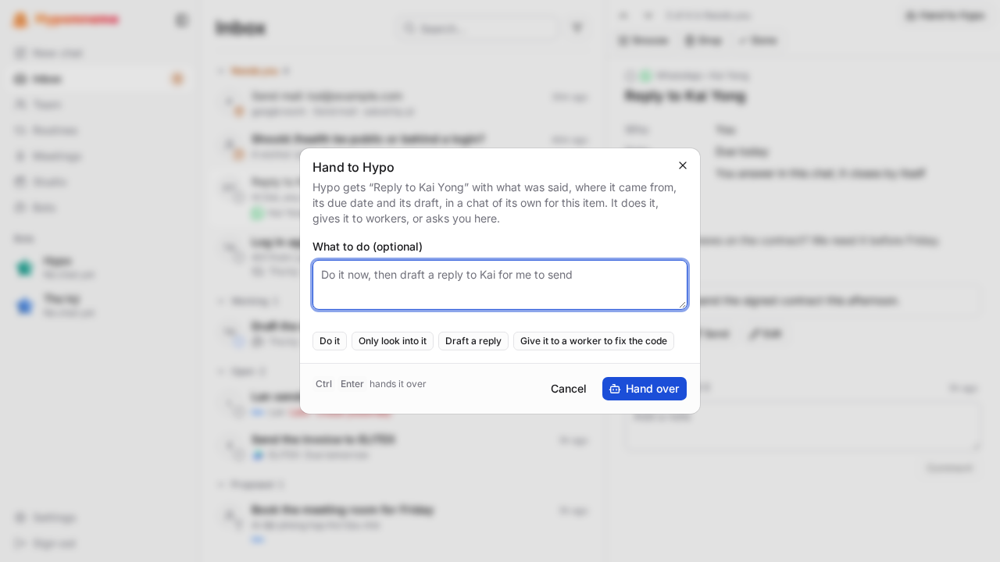
desktop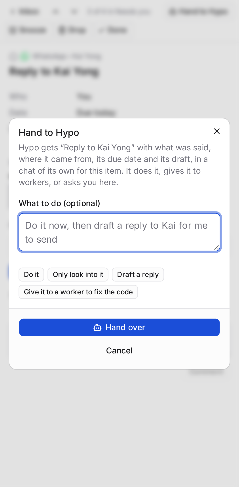
phoneHand to Hypo (dark, over a reply)
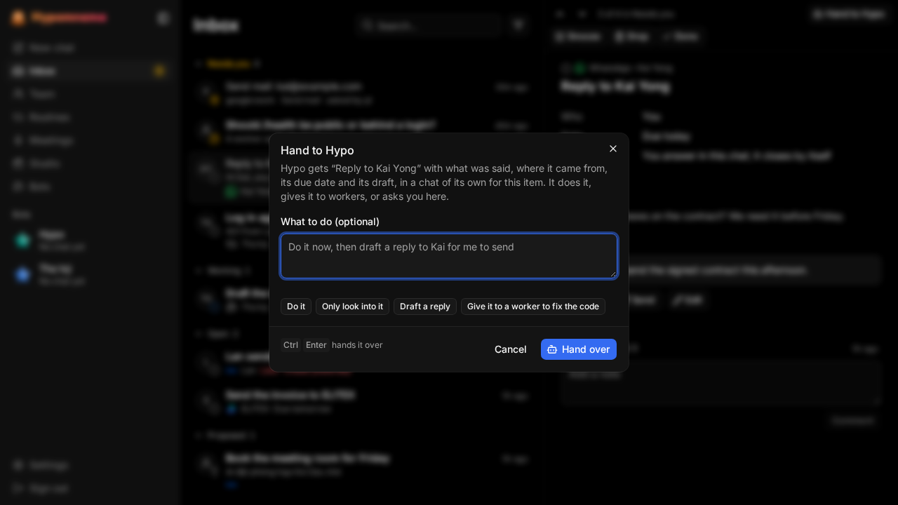
desktop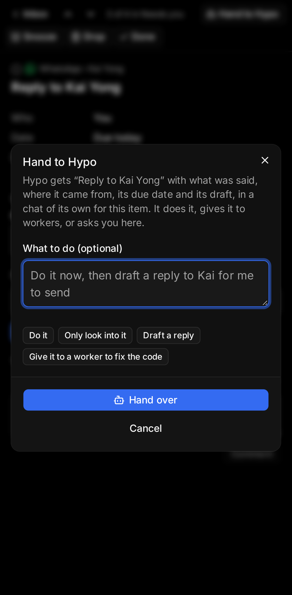
phoneThe item's thread after the hand-over and a comment (dark)
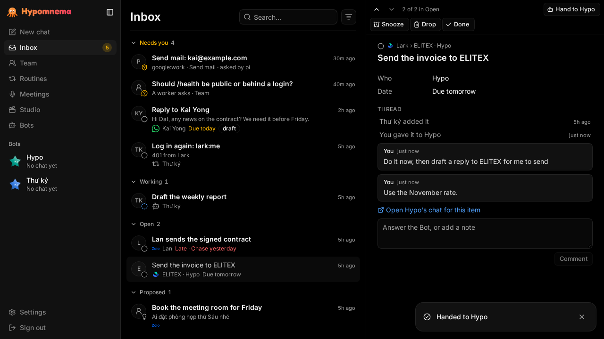
desktop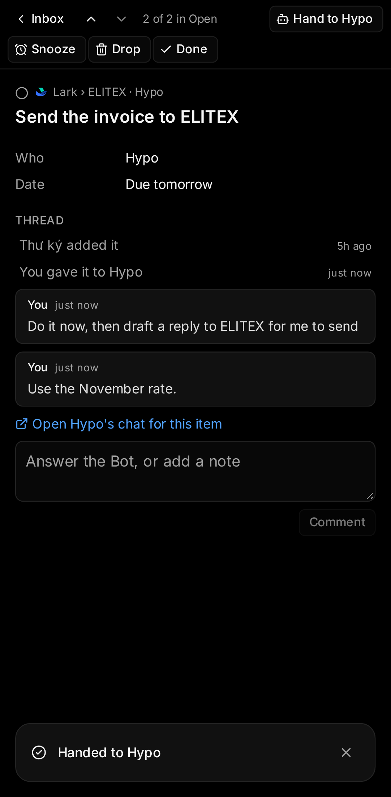
phoneSend: the confirmation names the recipient and the place (dark)
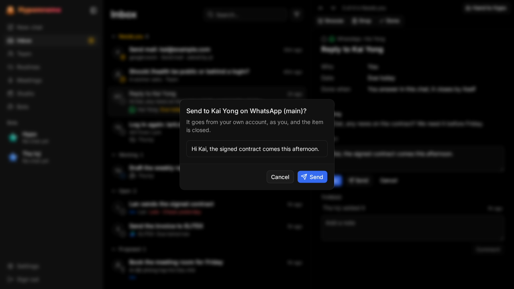
desktop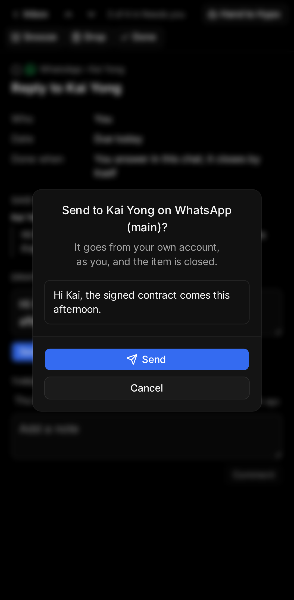
phoneSend confirmation (light)
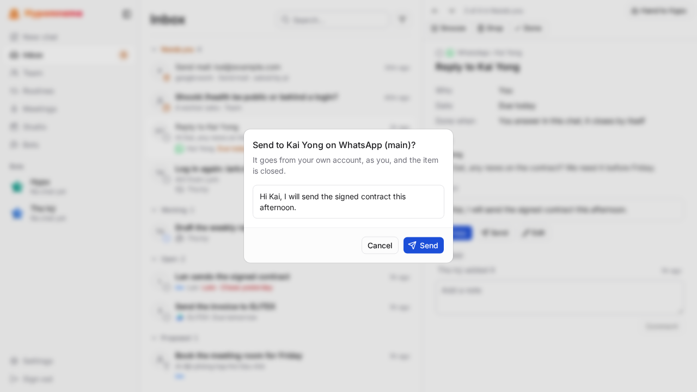
desktop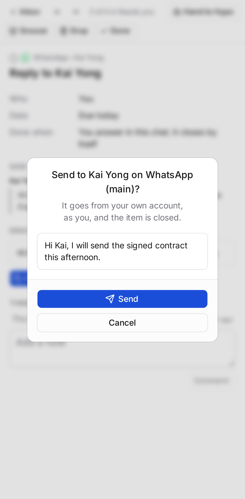
phoneSend confirmation (dark)
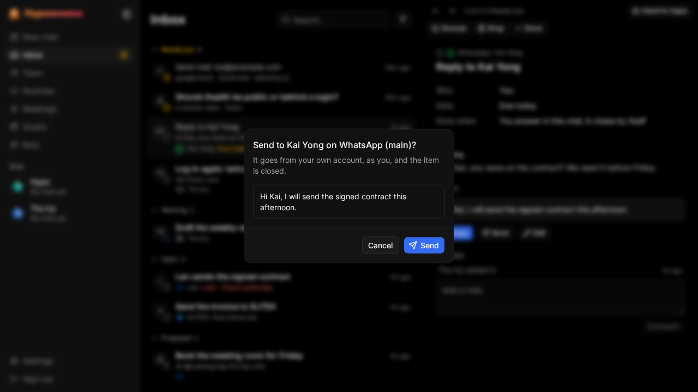
desktop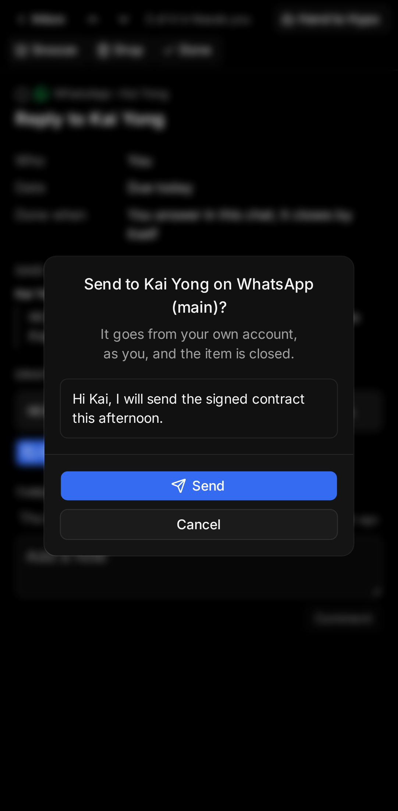
phoneA reply item: Copy and Send on the draft, the thread (light)
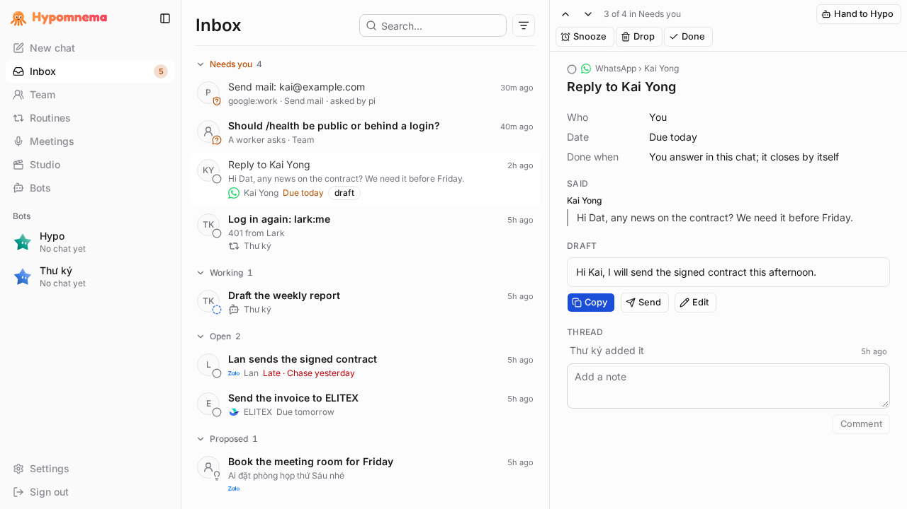
desktop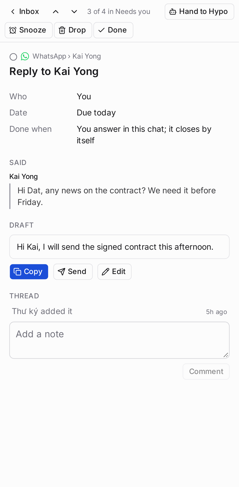
phoneA reply item (dark)
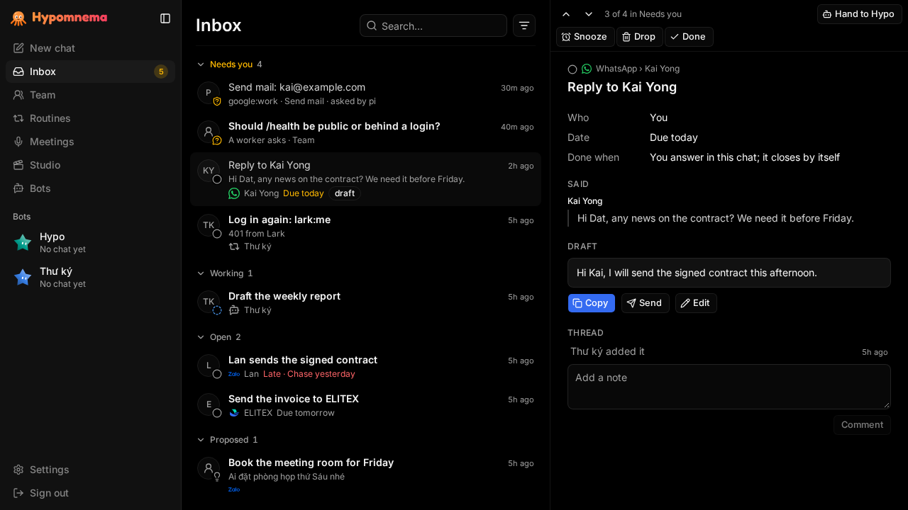
desktop phone
phone